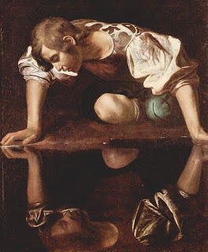

Bava Batra 140 - Doubtful Gender Takes the Lesser Portion in the Inheritance

If the deceased left behind sons and daughters and a tumtum (a person of indeterminate gender, with genitals recessed and covered by flesh) - when the property is abundant, the males push the tumtum away to the females. Since it is unknown whether the tumtum is male or female, he cannot claim more than the lesser of the two portions. He thus receives support until maturity, like the daughters. When the property is meager, the females push him away to the males, and he receives nothing, like the other sons.
Art: Michelangelo Merisi da Caravaggio - Narcissus